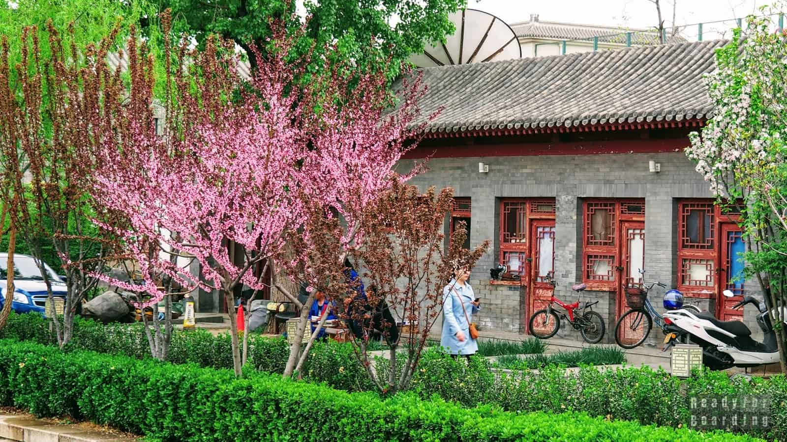

Spring Morning — 新春的早晨
The air smells of damp bricks and blossoming jujube trees. Bicycles roll softly over wet stone. Sunlight slides through the grey-tiled roofs, catching laundry and red paper charms still clinging from Lunar New Year. The hutong breathes awake, quietly.